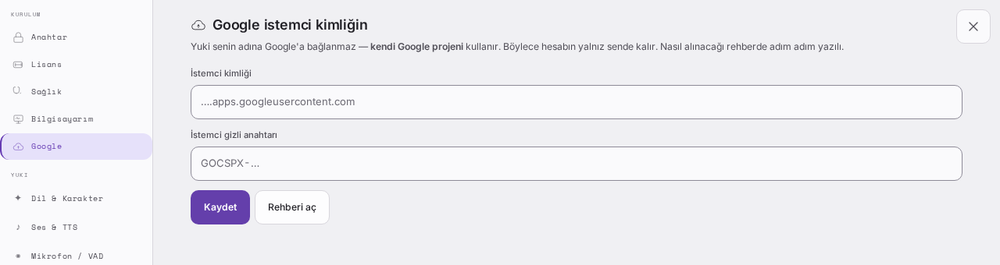
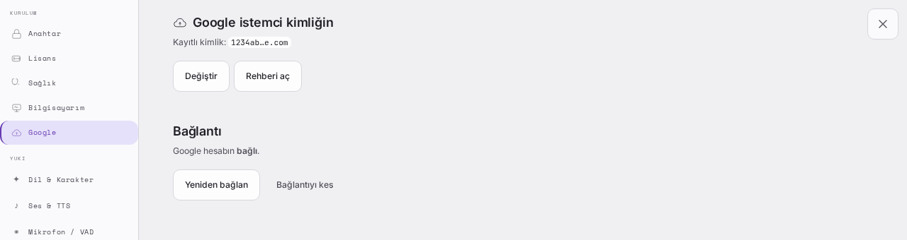
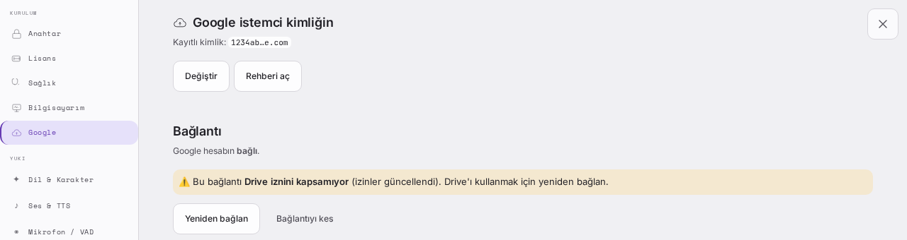

Takvimini okuyup etkinlik ekleyebilmesi ve Drive'a dosya yazabilmesi için Yuki'nin senin iznine ihtiyacı var. Bu izni kendi Google projen üzerinden verirsin — yani hesabın aracı bir sunucudan geçmez, yalnız senin bilgisayarında kalır.
Yuki'nin arkasında bizim bir sunucumuz yok. Eğer hazır bir bağlantı verseydik takvim ve dosya izinlerin bizim uygulamamıza tanınmış olurdu. Bu yolda izinler doğrudan senin oluşturduğun uygulamaya verilir: istediğin an Google hesap ayarlarından tek tıkla geri alabilirsin.
console.cloud.google.com/projectcreate adresine git ve Google hesabınla giriş yap.
Buradan sonraki tüm adımlar aynı proje seçiliyken yapılmalı. Üst çubuktaki proje adının Yuki (ya da verdiğin ad) olduğunu her adımda bir kez kontrol et — yanlış projede açılan izin, doğru projede yokmuş gibi davranır.
Projelerin listesi boş değilse oradan birini seçip 2. adımdan devam et. Var olan bir projede servisler açık ve izin ekranı tanımlı olabilir — o adımlar kendiliğinden atlanır, yalnız 5. adımdaki istemciyi oluşturman yeter. Aynı projede birden çok istemci durabilir; başka bir uygulaman varsa onun kimliğine dokunmaz.
Google hesabına bağlı bir organizasyon varsa (iş/okul hesabı ya da sonradan açılmış bir Cloud Identity), yeni proje formu faturalandırma hesabı ister ve CREATE düğmesi geçmez. İki çıkış yolu var: zaten var olan bir projeni kullan (yukarıdaki kutu) ya da formdaki Billing account listesinden hesabını seç. Takvim ve Drive erişimi yine ücretsizdir — faturalandırma hesabı yalnız projeye bağlanır, bu iki servis için ücret işlemez.
Proje yeni olduğu için hiçbir Google servisi açık gelmez; ikisini elle açacaksın.
Bağlantılar seni doğrudan doğru sayfaya götürür. Elle arayacaksan: APIs & Services → Library → arama kutusuna servis adını yaz.
Bu, bağlanırken karşına çıkacak “şu uygulama şunlara erişmek istiyor” ekranıdır. Sol menüde Google Auth Platform başlığı altında durur; eski adı OAuth consent screen'dir.
İzinleri (scope) buradan elle eklemene gerek yok: Yuki gerekli izinleri bağlanma anında kendisi ister.
Yeni bir izin ekranı Testing durumunda başlar. Google, test durumundaki uygulamalara verilen izni 7 gün sonra otomatik iptal eder. Yuki o gün “bağlı değilsin” demeye başlar ve sebebi hiçbir yerde yazmaz — üstelik bu, sen hiçbir şey yapmadan olur.
Sol menüde Audience (eski adı OAuth consent screen) → Publishing status bölümü → PUBLISH APP düğmesi → çıkan uyarıyı CONFIRM ile onayla. Durumun In production olduğunu gör.
“Verification” (doğrulama) gerekmez. Google doğrulama isteyebilir; başvurmana gerek yok — uygulamanın sahibi sensin ve onu yalnız kendi hesabınla kullanıyorsun. Doğrulanmamış olmanın tek görünür sonucu, bir sonraki adımdaki Advanced uyarısını bir kez geçmen.
Sol menüde Clients (eski adı Credentials) → CREATE CLIENT / + CREATE CREDENTIALS → OAuth client ID.
Pencereyi kapatırsan Client secret'ı sonradan yine görebilirsin: Clients listesinden istemcinin adına tıkla. Yine de ikisini şimdi kopyalayıp bir sonraki adıma geçmek en kolayı.
Yuki'de ⚙ AYAR → KURULUM → Google panelini aç. Panel üç adım gösterir; az önce kopyaladığın iki değeri 2. adımdaki alanlara yapıştır ve Kaydet'e bas. Kaydedince 1. ve 2. adım işaretlenir, Google ile bağla düğmesi açılır.

Kimlik bu bilgisayarda saklanır, hiçbir yere gönderilmez. Yanlış yapıştırdıysan panel bunu söyler: kimliğin sonu .apps.googleusercontent.com değilse “Google istemci kimliğine benzemiyor” uyarısı çıkar.
Aynı panelde Google hesabını bağla düğmesine bas. Onay ekranı kendi tarayıcında açılır (Yuki'nin içinde değil — parola yöneticin ve açık oturumların orada olsun diye).
Google takvim ve Drive iznini iki ayrı satırda sorar ve biri işaretsiz kalırsa yine de “bağlandın” der. O hâlde Yuki bağlı görünür ama eksik izne bağlı özellik hiç çalışmaz — sebebi de hiçbir yerde yazmaz. Yuki bunu bağlantı biter bitmez söyler; uyarıyı görürsen Yeniden bağlan yeter, baştan kurulum gerekmez.

Deneme: Yuki'ye “bu hafta takvimimde ne var?” diye sor. Etkinliklerini sayıyorsa bağlantı gerçekten çalışıyor demektir.
| Gördüğün | Sebebi ve çözümü |
|---|---|
| invalid_client | İstemci kimliği ya da gizli anahtar hatalı/eksik kopyalanmış. 5. adımdaki iki değeri yeniden kopyala; panelde Değiştir deyip baştan yapıştır. Başında/sonunda boşluk kalmasın. |
| redirect_uri_mismatch | İstemci Desktop app yerine Web application olarak açılmış. Bu tür sabit adres ister. Clients ekranından Desktop app türünde yeni bir istemci oluştur ve yeni kimliği panele gir. |
| access_denied / “app is currently being tested” | İzin ekranı hâlâ Testing durumunda ve hesabın test kullanıcısı değil. 4. adıma dön: PUBLISH APP → In production. |
| Panel “Bağlantı koptu — Google artık izin vermiyor” diyor | Google bu bağlantının iznini artık kabul etmiyor. Üç olası sebep: ① izin Google hesabından kaldırıldı (Üçüncü taraf erişimi), ② hesap parolası değişti ya da Google güvenlik nedeniyle oturumları kapattı, ③ izin ekranı hâlâ Testing durumunda — Google o durumda izni 7 günde iptal eder; bağlandıktan tam bir hafta sonra koptuysa sebep büyük ihtimalle budur, 4. adıma dön ve yayın durumunu In production yap. Hangisi olursa olsun panelden Yeniden bağlan çoğu zaman yeter. |
| “Bu bağlantı Drive iznini kapsamıyor” | Bağlantı, Drive izni eklenmeden önce kurulmuş ya da onay ekranında Drive işareti kaldırılmış. Yeniden bağlan deyip iki izni de işaretli bırak. |
| Panel “istemci kimliği geçersiz” ya da “kayıtlı kimlik geçersiz” diyor | Kimlik kayıtlı ama Google onu tanımıyor: istemci Google Cloud'da silinmiş, gizli anahtarı yenilenmiş ya da eksik kopyalanmış olabilir. Paneldeki Kimliği değiştir → 5. adımdaki değerleri yeniden gir. Yalnız gizli anahtarı düzelttiysen bağlantın kendiliğinden yeniden denenir. |
| Google ile bağla'ya basınca tarayıcı açılmıyor | Varsayılan tarayıcın tanımlı olmayabilir. Bir tarayıcı açıp varsayılan yap, sonra yeniden dene. |
| Başka bir Google hesabına geçmek istiyorum | Önce Bağlantıyı kes, sonra Google ile bağla ve onay ekranında diğer hesabı seç. Aynı istemci kimliği kullanılabilir, yeniden oluşturmana gerek yok. |
